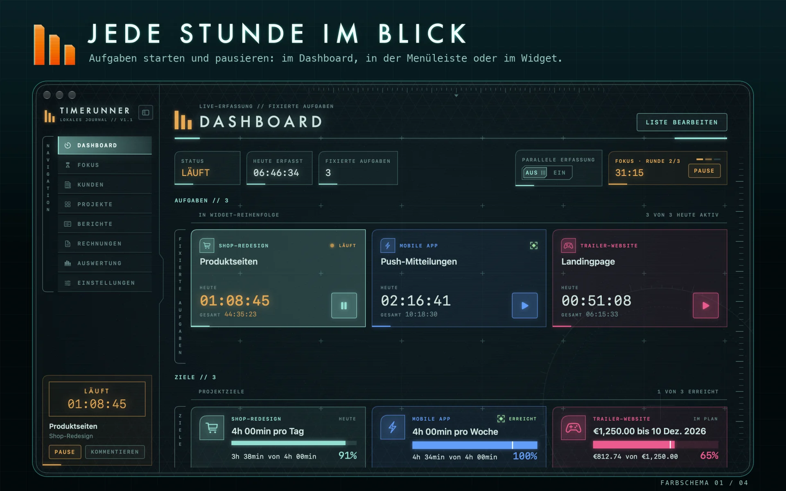
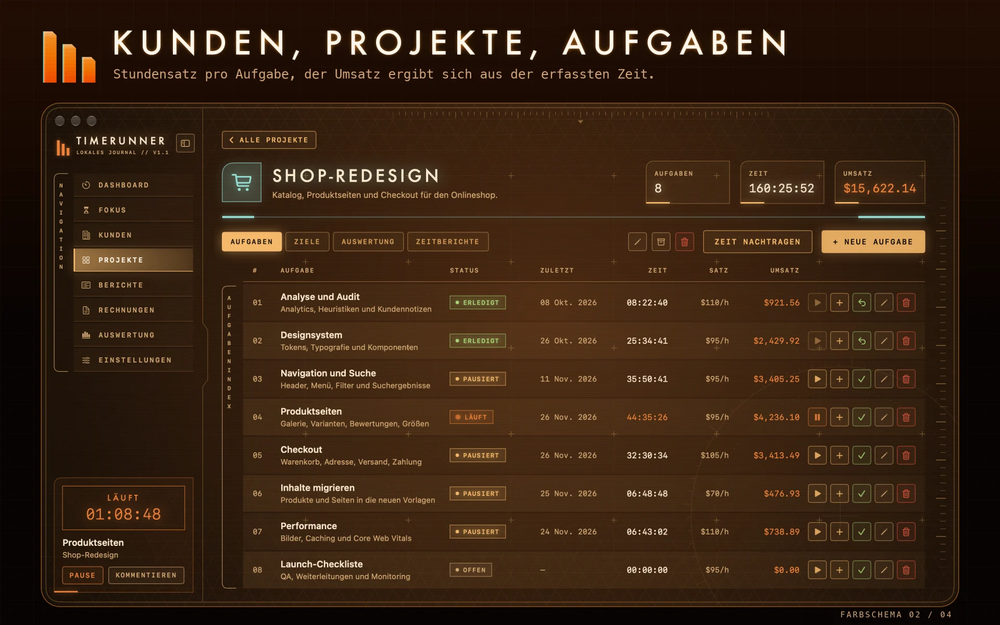
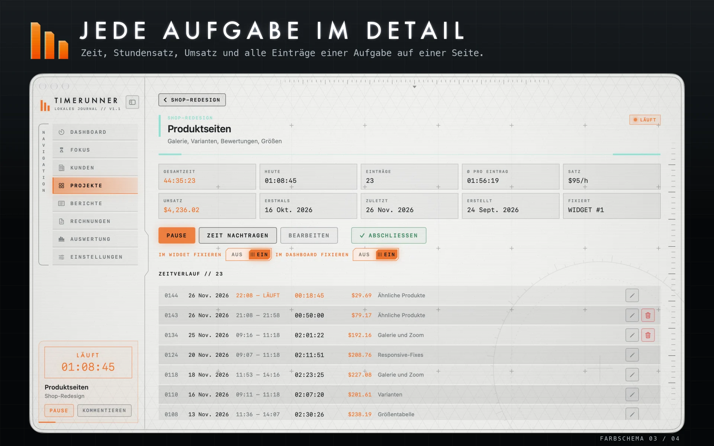
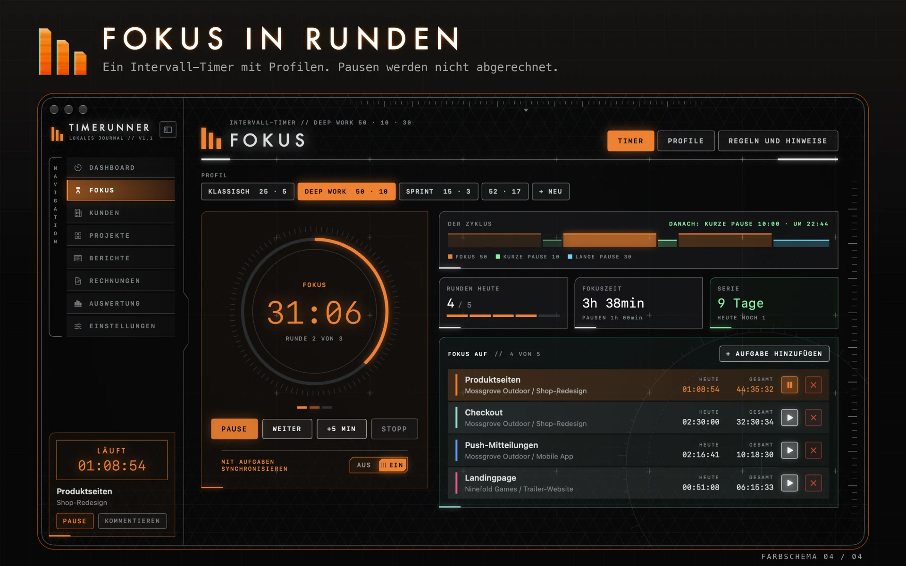
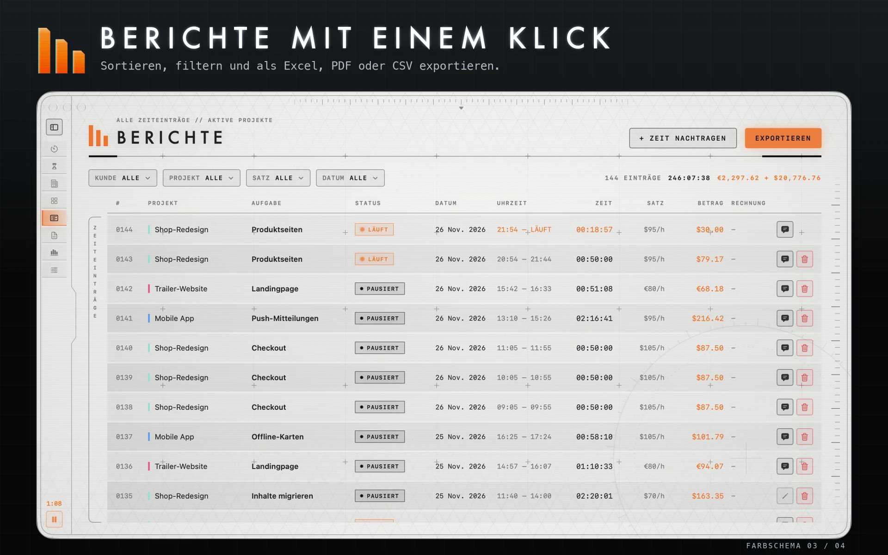
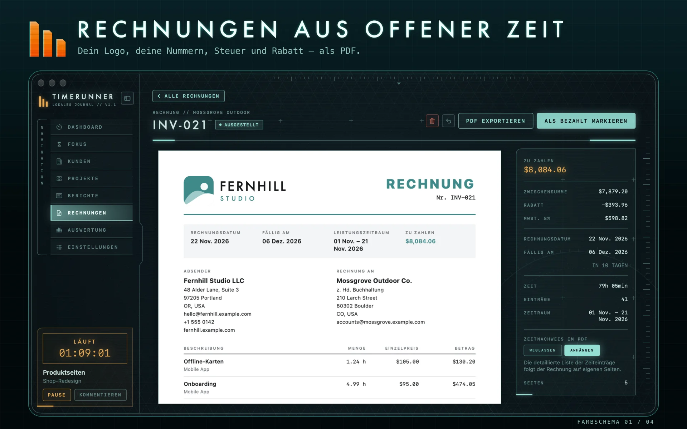
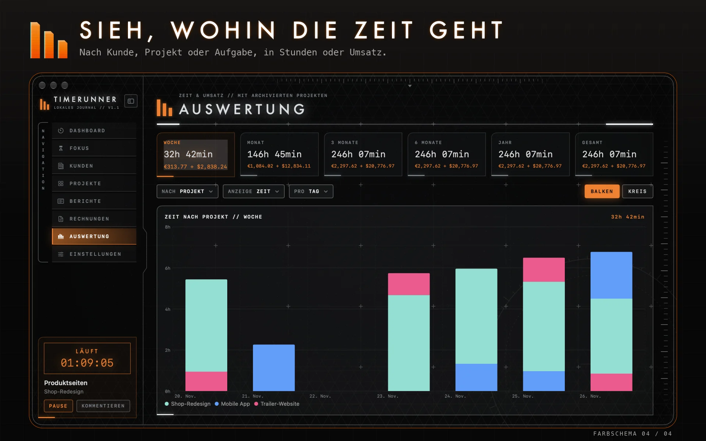
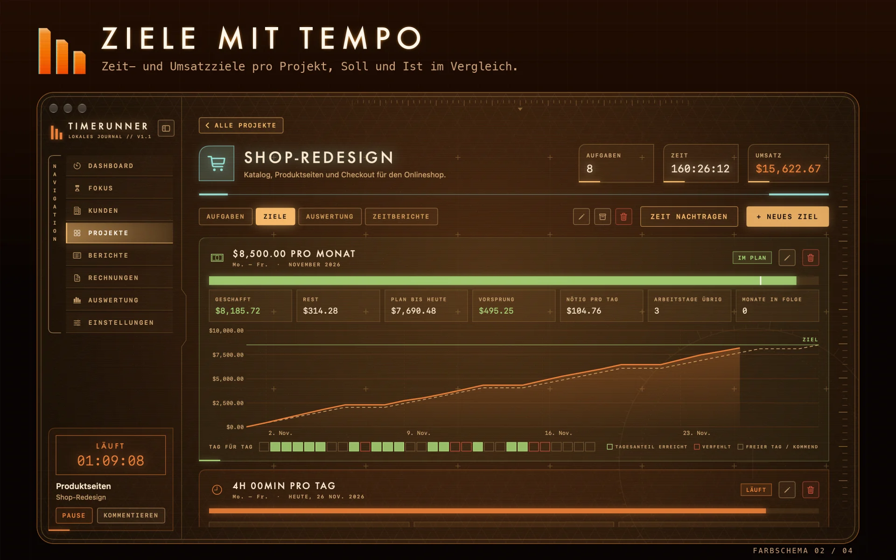
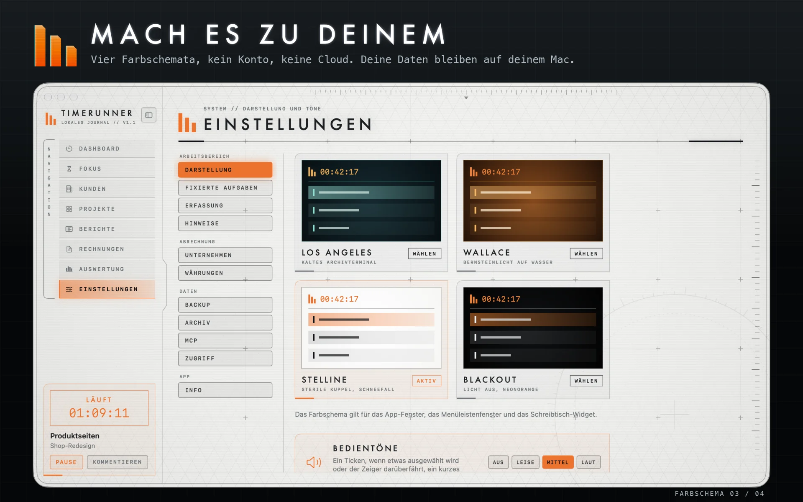
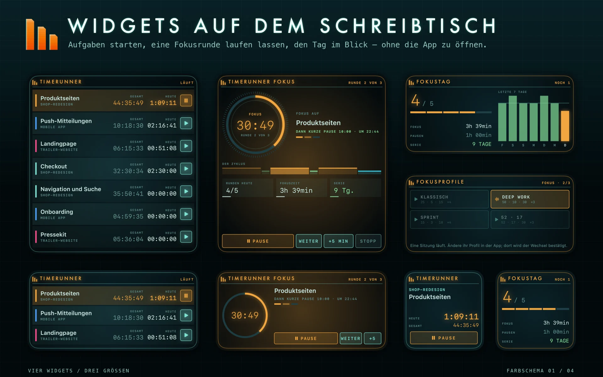

Zeit erfasst,
wie du sie abrechnest
Zeiterfassung, die nach Zukunft aussieht: Timer, Pomodoro-Fokus, Einnahmen live und PDF-Rechnungen in einer Neon-Konsole für den Mac. Privat. Schön. Ein Monat gratis.


- Kunden → Projekte → Aufgaben → Zeiteinträge, mit Stundensatz und Währung pro Aufgabe
- Ein Timer zur Zeit oder mehrere nebeneinander

- Vergessene Zeit nachtragen, mit Tag, Dauer und Kommentar
- Status: Offen, Läuft, Pausiert, Erledigt

- Ein Intervall-Timer im Pomodoro-Stil: Fokusrunden, kurze Pausen und eine lange nach der letzten
- Profile: 25·5, 50·10, 15·3, 52·17 – und eigene
- Er kann den Timer einer Aufgabe starten und in den Pausen anhalten, damit Pausen nicht abgerechnet werden
- Töne, Mitteilungen, ein Hinweis vor dem Ende, ein Pausenbildschirm
- Eine Aufgabenliste für den Fokus: Sitzungen folgen nur den Aufgaben, die du auf die Liste setzt

- Eine sortierbare Tabelle aller Einträge, mit Filtern nach Kunde, Projekt, Satz und Datum
- Export als Excel-Arbeitsmappe (.xlsx), PDF oder CSV

- PDF-Rechnungen aus der nicht abgerechneten Zeit eines Kunden – alles oder ein Zeitraum, eine Position pro Aufgabe, Projekt oder Eintrag
- Dein Logo, deine Farbe, Zahlungsdaten, Nummerierung, Steuer und Rabatt
- Entwurf → Ausgestellt → Bezahlt; überfällig ergibt sich aus dem Fälligkeitsdatum
- Zeit auf einer ausgestellten Rechnung wird nie doppelt abgerechnet

- Summen für Woche, Monat, Quartal, Jahr oder die gesamte Zeit – nach Kunde, Projekt oder Aufgabe, in Stunden oder Umsatz

- Zeit- oder Umsatzziele pro Projekt: pro Tag, Woche oder Monat oder bis zu einem Datum
- Fortschritt, Tempo, ein Soll-Ist-Diagramm und eine Markierung für jeden Tag

- Vier Farbschemata, von Neontürkis bis schlichtem Schwarz
- Bereiche, die du nicht brauchst, lassen sich ausblenden
- Das Fenster schrumpft in eine Bildschirmecke und bleibt nützlich
- In neun Sprachen: Englisch, Spanisch, Französisch, Deutsch, Italienisch, Polnisch, Belarussisch, Japanisch und Koreanisch

- Ein Klick zum Starten oder Pausieren – in der App, in der Menüleiste, auf dem Schreibtisch
- Drei Widgets: der Timer, dein Tag, deine Profile
- Fixiere eine Aufgabe getrennt im Dashboard und im Schreibtisch-Widget
- Kein Konto, keine Analyse, keine Werbung – nichts von dem, was du eingibst, verlässt deinen Mac
- Automatische tägliche Backups auf deinem Mac und in einem Ordner deiner Wahl
- Optionale Sperre mit Touch ID
- Jede Landeswährung und die zehn größten Kryptowährungen
- Der integrierte MCP-Connector verbindet TimeRunner mit Claude, ChatGPT, Codex, Cursor, VS Code und anderen KI-Tools auf deinem Mac
- Sag es in deinen eigenen Worten – „starte den Timer für Design“, „trag gestern zwei Stunden für Acme ein“, „schließ diese Aufgabe ab“ – und dein Assistent erledigt es in TimeRunner
- Er kann Kunden, Projekte und Aufgaben anlegen, Timer starten und stoppen, Zeit eintragen, Aufgaben abschließen und Projekte archivieren
- Frag nach einem Bericht: Stunden und Umsatz nach Kunde, Projekt oder Aufgabe, nach Tag, Woche oder Monat; Rechnungen, erhaltene Zahlungen und offene Beträge
- Aus, bis du ihn einschaltest, auf Wunsch nur lesend, und löschen lässt sich darüber nie etwas
EIN MONAT GRATIS, DANN ENTSCHEIDEST DU
TimeRunner ist kostenlos zu laden, und im ersten Monat ist alles gratis. Danach:
Zahlung pro Monat
Zahlung pro Jahr oder in 12 Monatsraten, wo der App Store sie anbietet
Einmal zahlen, nichts verlängert sich
Ohne Abo oder Kauf wird TimeRunner schreibgeschützt: Deine Einträge bleiben auf deinem Mac und lassen sich weiter öffnen, exportieren und sichern.
Ein Abo wird über deinen Apple Account abgerechnet und verlängert sich automatisch um denselben Zeitraum zum selben Preis, wenn es nicht mindestens 24 Stunden vor Ablauf des Zeitraums gekündigt wird. Verwalten oder kündigen kannst du es in den Account-Einstellungen des App Store.
Preise in den USA. In anderen Ländern zeigt der App Store die dort gültigen an.